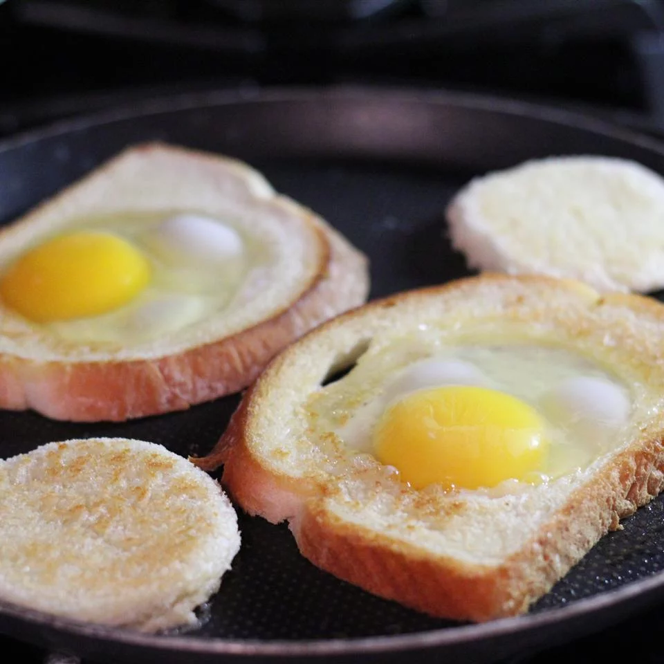

Egg In a Boat
Egg In a Boat

Over-easy eggs, and toast all in one! I like to use the hole cut out of the center for dipping into the egg yolk!
Ingredients
- cooking spray
- ½ tablespoon butter
- 1 slice white bread
- 1 egg
Directions
- Butter both sides of bread. Cut a circular hole in the center of the slice of bread, about 2 1/2 inches in diameter.
- Heat a frying pan or griddle on medium-high heat. When the frying pan is hot, place the bread into the pan and let it brown for one minute. Flip the toast over and let the other side brown for one minute.
- Bake in the preheated oven for 5 minutes.
- Break the egg into the hole in the bread. Cook for 2 minutes, or until the egg is cooked to the consistency you prefer.